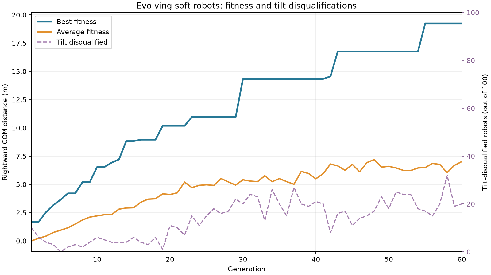
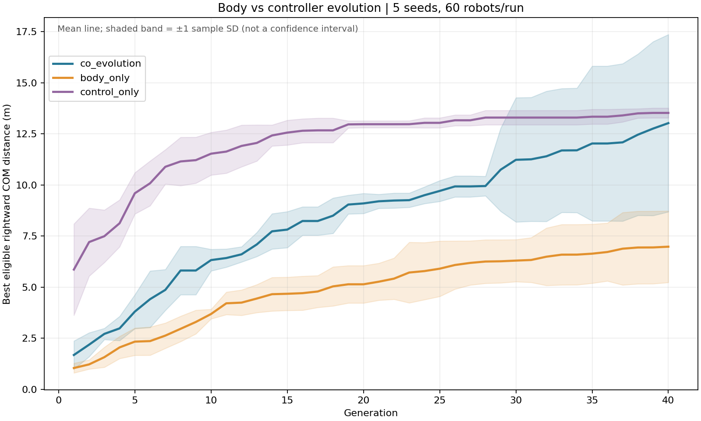
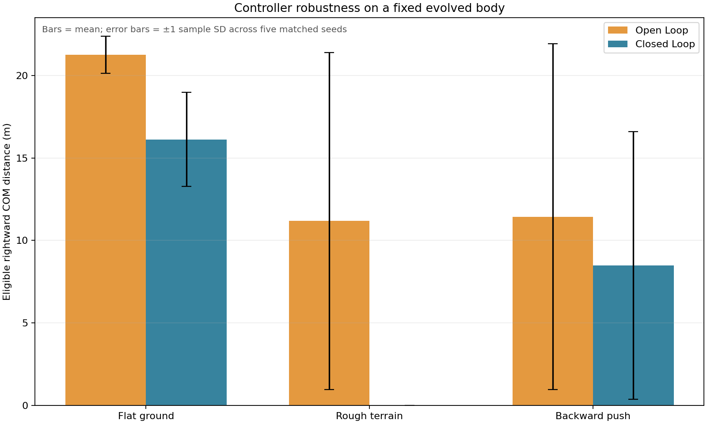

A
A punctuated search
The showcase plateaued around generations 30–40 before a later breakthrough; the dashed curve counts tilt disqualifications.

No legs were programmed. A genetic algorithm discovered bodies and rhythms that turn soft material into forward motion. Watch it happen, then try your own design.
GitHub ↗The same physics, three checkpoints. First an arch that shuffles; later a hooked front leg and a refined hopping gait. Ground ticks are one model meter apart.
A 2D mass-spring model, not a calibrated physical robot. Falling for 0.2 s beyond 30° gives zero eligible distance. Limbs can pass through the body.
Click a cell to cycle its material. Keep every occupied cell connected by an edge and include at least one actuator. Your robot starts with synchronized sine-wave actuation.
The showcase plateaued around generations 30–40 before a later breakthrough; the dashed curve counts tilt disqualifications.

Across five seeds, joint evolution did not establish superiority over either fixed baseline; shaded bands show sample standard deviations.

Sine and neural controllers trained on flat ground face rough terrain and a backward push; error bars show variability across five seeds.
